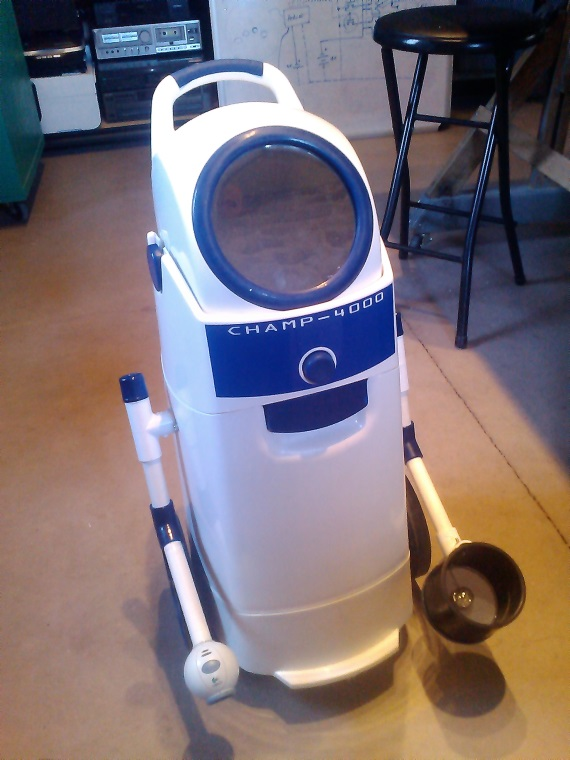
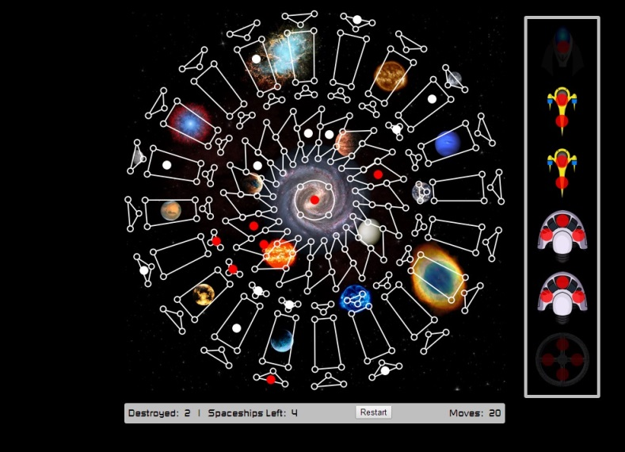

One Man's Junk... Is Another Man's Robot!
See our photos from the event on our Flickr page
CHAMP - 4000

Features:
- Lighted RGB infinity mirror eye
- Motorized arms
- Camera
- Lit candy holder
- Phone control via WiFi
- 6x6 LED matrix
Parts:
- Diaper Champ
- 2 electric screwdrivers
- Scrap wood
- Misc. PVC and fittings
- LED flashlight
- Erector motor and parts
- Misc. salvaged wire
- Arm9 Microcontroller
- RGB LED strip
- Electronic components removed from old electronics
R8-D7
Features:
- Motorized arms
- Pneumatic claw
- Computer interface arm
- Wireless Playstation remote control
- Vacuum
Parts:
- Roomba
- 2 battery powered drills
- Scrap wood
- Misc. PVC and fittings
- IKEA salad bowl
- Misc. salvaged wire
- Arduino UNO
- Joystick ports removed from Playstation
- Pneumatic claw
- Solenoid valve
- Electronic components removed from old electronics
POV Wand
Features:
- 20 LED Wand
- 2 Potentiometers to select program
Parts:
- Erector motor and parts
- Scrap wood
- Misc. salvaged wire
- Arduino Nano V3.0
- Electronic components removed from old electronics
Battleship Galactica


Features:
- 82 pressable regions
- USB keyboard/mouse output
Parts:
- Electronic dartboard
- Scrap wood
- Misc. salvaged wire
- Arduino Leonardo
- Electronic components removed from old electronics
Energy Generator Bike
Features:
- Fan to keep rider cool
- 12v electric generator
- Dual 12v car outlets
Parts:
- Exercise Bike
- 2 12v RV fans
- Misc. salvaged wire
- Car outlets
- Electronic components removed from old electronics